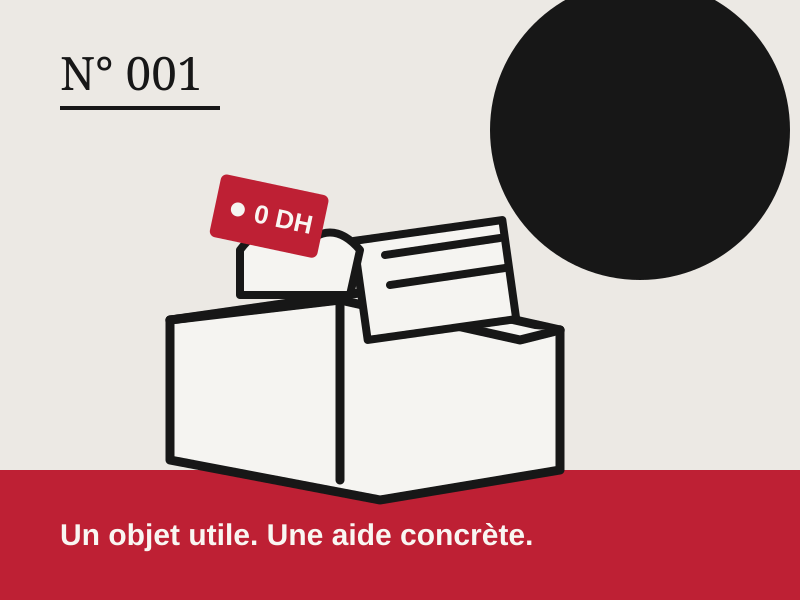

Un objet utile.
Une aide concrète.
Solidarité+ facilite la rencontre entre les personnes qui donnent, celles qui en ont besoin et les associations locales.
Prototype étudiant. Les annonces affichées sont des exemples fictifs : demander de l'aide ici ne coûte rien et ne se justifie pas.

Trois étapes, une remise en main propre
-
Vous publiez l'objet
Un titre, un état, un quartier approximatif. Jamais d'adresse ni de numéro de téléphone.
-
Une association vérifie l'annonce
Dans la démonstration, un modérateur la valide, la refuse ou la signale.
-
La remise se fait en personne
Sans paiement de part et d'autre. Vous voyez l'objet, la personne le reçoit.
Cinq familles d'objets, exactement
Vêtements en bon état, fournitures scolaires, hygiène, alimentation non périssable et articles ménagers. Ouvrir une catégorie amène directement au registre.
Sur le registre cette semaine
Trois entrées prises parmi les données de démonstration. Le répertoire complet se consulte avec ses filtres.
Vie privée et dignité, dès la première annonce
Demander un objet essentiel ne doit rien coûter : ni argent, ni justification, ni humiliation. Le prototype applique cette règle dans chaque écran.
- Aucune adresse exacte publiée L'annonce montre un quartier approximatif. La remise se décide hors ligne, entre les parties.
- Aucun justificatif à fournir La demande indique l'objet et un quartier, rien d'autre. Pas de dossier, pas de photos de maison.
- Un signalement en un clic Chaque annonce peut être signalée à l'association qui la vérifie, comme partout dans la démo.
Un objet qui dort est un objet qui manque à quelqu'un
Manteaux, cartables, conserves, vaisselle : publier prend trois minutes et la modération est gratuite, comme toute la plateforme.